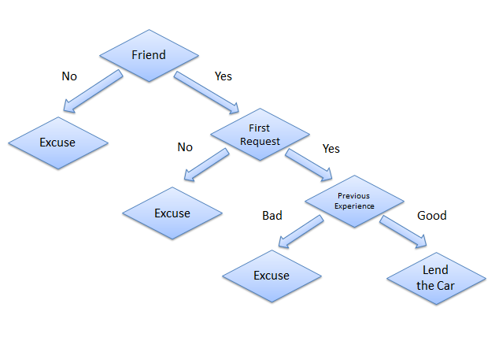

Introduction
A decision tree is one of most frequently and widely used supervised machine learning algorithms that can perform both regression and classification tasks. The intuition behind the decision tree algorithm is simple, yet also very powerful.
For each attribute in the dataset, the decision tree algorithm forms a node, where the most important attribute is placed at the root node. For evaluation we start at the root node and work our way down the tree by following the corresponding node that meets our condition or "decision". This process continues until a leaf node is reached, which contains the prediction or the outcome of the decision tree.
This may sound a bit complicated at first, but what you probably don't realize is that you have been using decision trees to make decisions your entire life without even knowing it. Consider a scenario where a person asks you to lend them your car for a day, and you have to make a decision whether or not to lend them the car. There are several factors that help determine your decision, some of which have been listed below:
Is this person a close friend or just an acquaintance? If the person is just an acquaintance, then decline the request; if the person is friend, then move to next step.
Is the person asking for the car for the first time? If so, lend them the car, otherwise move to next step.
Was the car damaged last time they returned the car? If yes, decline the request; if no, lend them the car.
The decision tree for the aforementioned scenario looks like this:

Decision tree
Advantages of Decision Trees
There are several advantages of using decision treess for predictive analysis:
Decision trees can be used to predict both continuous and discrete values i.e. they work well for both regression and classification tasks.
- They require relatively less effort for training the algorithm.
- They can be used to classify non-linearly separable data.
- They're very fast and efficient compared to KNN and other classification algorithms.
- Implementing Decision Trees with Python Scikit Learn
In this section, we will implement the decision tree algorithm using Python's Scikit-Learn library. In the following examples we'll solve both classification as well as regression problems using the decision tree.
Note: Both the classification and regression tasks were executed in a Jupyter iPython Notebook.
1. Decision Tree for Classification
In this section we will predict whether a bank note is authentic or fake depending upon the four different attributes of the image of the note. The attributes are Variance of wavelet transformed image, curtosis of the image, entropy, and skewness of the image.
Dataset
The dataset for this task can be downloaded from this link:
https://drive.google.com/open?id=13nw-uRXPY8XIZQxKRNZ3yYlho-CYm_Qt
For more detailed information about this dataset, check out the UCI ML repo for this dataset.
The rest of the steps to implement this algorithm in Scikit-Learn are identical to any typical machine learning problem, we will import libraries and datasets, perform some data analysis, divide the data into training and testing sets, train the algorithm, make predictions, and finally we will evaluate the algorithm's performance on our dataset.
Importing Libraries
The following script imports required libraries:
import pandas as pd
import numpy as np
import matplotlib.pyplot as plt
%matplotlib inline
Importing the Dataset
#Since our file is in CSV format, we will use panda's read_csv method to read our CSV data file. Execute the following script to do so:
dataset = pd.read_csv("D:/Datasets/bill_authentication.csv")
#In this case the file "bill_authentication.csv" is located in the "Datasets" folder of "D" drive. You should change this path according to your own system setup.
Data Analysis
#Execute the following command to see the number of rows and columns in our dataset:
dataset.shape
#The output will show "(1372,5)", which means that our dataset has 1372 records and 5 attributes.
#Execute the following command to inspect the first five records of the dataset:
dataset.head()
#The output will look like this:
Variance Skewness Curtosis Entropy Class
0 3.62160 8.6661 -2.8073 -0.44699 0
1 4.54590 8.1674 -2.4586 -1.46210 0
2 3.86600 -2.6383 1.9242 0.10645 0
3 3.45660 9.5228 -4.0112 -3.59440 0
4 0.32924 -4.4552 4.5718 -0.98880 0
Preparing the Data
In this section we will divide our data into attributes and labels and will then divide the resultant data into both training and test sets. By doing this we can train our algorithm on one set of data and then test it out on a completely different set of data that the algorithm hasn't seen yet. This provides you with a more accurate view of how your trained algorithm will actually perform.
To divide data into attributes and labels, execute the following code:
X = dataset.drop('Class', axis=1)
y = dataset['Class']
Here the X variable contains all the columns from the dataset, except the "Class" column, which is the label. The y variable contains the values from the "Class" column. The X variable is our attribute set and y variable contains corresponding labels.
The final preprocessing step is to divide our data into training and test sets. The model_selection library of Scikit-Learn contains train_test_split method, which we'll use to randomly split the data into training and testing sets. Execute the following code to do so:
from sklearn.model_selection import train_test_split
X_train, X_test, y_train, y_test = train_test_split(X, y, test_size=0.20)
In the code above, the test_size parameter specifies the ratio of the test set, which we use to split up 20% of the data in to the test set and 80% for training.
Training and Making Predictions
Once the data has been divided into the training and testing sets, the final step is to train the decision tree algorithm on this data and make predictions. Scikit-Learn contains the tree library, which contains built-in classes/methods for various decision tree algorithms. Since we are going to perform a classification task here, we will use the DecisionTreeClassifier class for this example. The fit method of this class is called to train the algorithm on the training data, which is passed as parameter to the fit method. Execute the following script to train the algorithm:
from sklearn.tree import DecisionTreeClassifier
classifier = DecisionTreeClassifier()
classifier.fit(X_train, y_train)
Now that our classifier has been trained, let's make predictions on the test data. To make predictions, the predict method of the DecisionTreeClassifier class is used. Take a look at the following code for usage:
y_pred = classifier.predict(X_test)
Evaluating the Algorithm
At this point we have trained our algorithm and made some predictions. Now we'll see how accurate our algorithm is. For classification tasks some commonly used metrics are confusion matrix, precision, recall, and F1 score. Lucky for us Scikit=-Learn's metrics library contains the classification_report and confusion_matrix methods that can be used to calculate these metrics for us:
from sklearn.metrics import classification_report, confusion_matrix
print(confusion_matrix(y_test, y_pred))
print(classification_report(y_test, y_pred))
This will produce the following evaluation:
[[142 2]
2 129]]
precision recall f1-score support
0 0.99 0.99 0.99 144
1 0.98 0.98 0.98 131
avg / total 0.99 0.99 0.99 275
From the confusion matrix, you can see that out of 275 test instances, our algorithm misclassified only 4. This is 98.5 % accuracy. Not too bad!